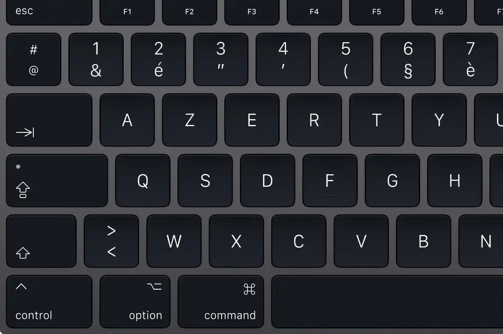
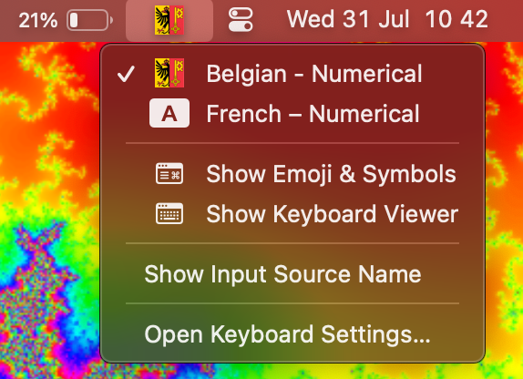

Belgian(or French) AZERTY keyboard configuration for MacOS that removes the need to be clicking the shift key in order to input numbers.
(French version at the bottom)
shift key modifier."§" key that now serves as an input to "\".Bonus feature: The default flag for this keyboard is the Geneva flag, but it can be easily changed with Ukelele

Belgian-Numerical.dmg.Keyboard Installer.app or (2) Move Belgian Numerical.bundle to /Library/Keyboard Layouts.Settings → Ìnput Sources → Edit....add and thendone.Remember, once you have the specified keyboard selected, you can hide the flag frol the menu bar by unselecting the toggle "Show Input menu in menu bar" within Settings.

Configuration du clavier AZERTY belge(ou français) pour MacOS qu'enlève le besoin de cliquer sur shift pour saisir des chiffres.
shift."§" qui sert désormais d'input à "\".Bonus : Le drapeau par défaut de ce clavier est le drapeau de Genève, mais il peut être facilement modifié avec Ukelele
Belgian-Numerical.dmg.Keyboard Installer.app, soit (2) Déplacez Belgian Numerical.bundle vers /Bibliothèque/Keyboard Layouts.Paramètres → Sources d'entrée → Modifier....ajouter puis sur terminé.N'oubliez pas qu'une fois vous avez le clavier spécifié sélectionné, vous pouvez masquer le drapeau de la barre de menu en désélectionnant la bascule "Afficher le menu de saisie dans la barre de menu" dans "Paramètres".